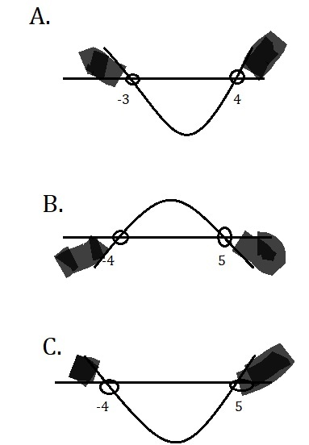

Name:
Test 1 Mathematics Grade 11
Question 1
Choose the correct factors of these trinomials
2x2 + 7x + 3 and 5x2 - 8x -4
Results:
Question 2
Choose the correct inequalities for x2 - 6x + 8 < 0
Results:
Question 3
Choose the correct inequalities for - x2 - 9x > 14
Results:
Question 4
Which of the following is the correct commentary on the roots of
x2 - 8x - 20 = 0
Results:
Question 5
Which one of the following is the correct inequality for the value of k
on this equation kx2 - 3x - 4 = 0
Results:
Question 6
Choose the correct factors of these trinomials
3x2 - 10x - 8 and 7x2 + 20x + 12
Results:
Question 7
Choose the correct x values of this equation using quadratic formula
x2 - 16x + 1 = 0
[The solution must be rounded off to two decimal places]
Results:
Question 8
Choose the correct x values of this equation using quadratic formula
- 3x2 - 2x + 17 = 0
[The solution must be rounded off to two decimal places]
Results:
Question 9
Results
Question 10

Results
Your marks will be displayed here: